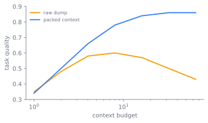

上下文工程
前沿模型并不直接作用于世界。它作用于自己的上下文窗口，也就是它在单次前向传播中能够注意到的那段长度有界的词元序列。在生成的那一刻，模型对一项任务所知道的一切，包括指令、检索到的文档、此前的对话、工具结果，都得由模型之外的某个东西装配进这个窗口。2025 年，领域把这门手艺从提示工程改名为上下文工程，正是因为工作的对象已经不再是一条提示，而是整段窗口的装配。更长的上下文窗口并不能单凭自身解决问题；词元预算与工具协议，会直接规定一个智能体实际能做什么。

整条论证围绕一个顽固的事实展开：更大的窗口并不能让问题消失，它只是把问题挪了个地方。后面的论述会从不同侧面推这个判断，从窗口为何行为失常，到还剩下什么杠杆，再到一个运行中的智能体如何装配自己的上下文、又在哪里崩坏。
窗口是唯一的通道
上下文窗口是一种固定而稀缺的资源，也是模型感知一项任务的唯一通道。这句话是全章的关键，值得我们看清楚。
窗口是有限的，里面每个词元都在争夺同一片空间。系统提示、工具目录、检索到的段落、一段很长的对话历史，都从同一份预算里支取。预算一旦超出，就必须有东西被丢弃、被摘要，或改为按需检索，而这些选择中的每一个都改变着模型能回答什么。没有第二条通道。凡是模型没在窗口里看到的，它就不知道。
读者大概会合理地期待，更大的窗口能化解这份压力。下一节说明它为什么做不到。
为何更大的窗口帮不上忙
模型并不均匀地使用窗口中的词元。即便相关信息已经在场，模型也最可靠地注意到输入的开头与结尾，最不可靠地注意到中间。Liu 等把这称为 lost-in-the-middle 效应 (Liu et al. 2023)，他们在多文档问答与键值检索上测出一条特征性的 U 形准确率曲线：所需事实位于上下文开头或结尾附近时表现最好，位于中间时则下降，有时甚至低于闭卷基线。更大的窗口废除不了这一点，它只是把中间拉得更长。
图 35.2 把这一后果勾勒成一张摆放图。可靠性在两端最高，沿着漫长的中间塌陷，于是一个事实在窗口中的位置，而不仅仅是它在不在场，决定了模型会不会用上它。
改变所需事实的位置，看着召回随之变化：下面先模拟一条 U 形召回曲线，再用蒙特卡洛把同一个事实分别放在开头、中间和一个随机位置，比较命中率。
import numpy as np
import matplotlib.pyplot as plt
rng = np.random.default_rng(0)
pos = np.linspace(0, 1, 41) # position in the window, 0=head 1=tail
recall = 0.45 + 0.5 * (2 * pos - 1) ** 2 # U-shape: high at edges, low in middle
def hit_rate(p, trials=20000):
prob = np.interp(p, pos, recall)
return rng.random(trials) < prob
for name, p in [("开头", 0.0), ("中间", 0.5), ("随机", None)]:
where = rng.random(20000) if p is None else p
print(f"{name:7s} 召回率 = {hit_rate(where).mean():.3f}")
plt.plot(pos, recall); plt.xlabel("位置（从开头到结尾）")
plt.ylabel("召回概率"); plt.title("中间遗失"); plt.show()
所以问题不只是「怎样把所有东西塞进去」，而是「该放什么进去、以什么顺序放，才能让模型用上它」。这是一个预算与摆放的问题，也是上下文工程要接手的工作。
杠杆：把上下文当作编程界面
模型权重在推理时是固定的。剩下唯一的杠杆，就是什么进入窗口、放在哪里，于是设计思路是把上下文窗口当作一个被管理的缓冲区，而不是一段提示。
这根杠杆之所以真实存在，是因为上下文学习。Brown 等用 GPT-3 表明，一个足够大的自回归模型能从放在上下文里的示范完成一项任务，全程不更新权重 (Brown et al. 2020)。他们按提示携带的示范数量分出三种范式：zero-shot，只有指令、没有示例；one-shot，一个示例；few-shot，少量、通常十到一百个、放得进窗口的示例。对此后一切都至关重要的发现是：上下文是一个编程界面。在一次会话内，以示范所消耗的词元为代价，靠改变模型的输入就能改变它的行为。
一旦上下文成了编程界面，对它的装配本身就成了值得工程化的产物，这也正是该领域一篇综述如今作为一门独立学问所编目的内容 (Mei et al. 2025)。Andrej Karpathy 在 2025 年年中为这个名字提出了论点，主张用上下文工程取代提示工程，理由是「prompt」让人联想到一条简短的指令，而真实应用做的是「用恰到好处的信息为每一步填充上下文窗口的、精细的艺术与科学」(Karpathy 2025)。Tobi Lutke 在同一周从应用侧给出了相同的说法：上下文工程是「为任务提供全部上下文、使其在 LLM 看来可解的艺术」(Lütke 2025)。这次改名不是装饰。它把工作的单位从一个人写下的单条字符串，移到一个系统装配出的流水线：系统提示、检索到的文档、对话历史、提炼出的记忆，以及工具输出，为一个运行中智能体的每一步而组合。
三个动作：预算、摆放、压缩
由上面两个事实，即窗口有限、模型少用中间，直接引出三个设计动作。
预算。 把窗口当作一种计入成本的资源。先核算固定开销，也就是系统提示与工具定义，再把剩下的部分分配给历史、检索，以及留给模型自身输出的余量。检索（第 33 章）的存在，正是为了让并非一切都必须同时住在窗口里：语料留在外面，每次查询只把相关的那一片调进来。
摆放。 因为中间是弱位置，顺序就很重要。把模型必须遵循的指令和价值最高的证据，放在注意力可靠的地方，也就是靠近边界处，而不是埋在一长段未经区分的堆叠里。lost-in-the-middle 是模型的一个属性，它向上一层规定了一个选择。
压缩而非累积。 一段对话或一条智能体轨迹会无界增长，窗口却不会。旧的回合被摘要成提炼后的状态，工具输出在重新进入窗口前先被过滤，持久的事实被写入一个外部记忆（第 30 章），需要时再检索，而不是逐字向前携带。
上下文预算不是一种风格偏好，而是被下层、被一个词元的成本所强加的。窗口里的每个词元都得驻留在 KV 缓存中并被注意到，而 第 22 章 里的服务问题与 第 23 章 里的缓存调度都表明，这项成本随上下文长度增长，既在内存上、也在算力上。更长的窗口并不是可以随意填满的免费容量。正是每词元的服务成本，使得一段紧凑、排好序的上下文成为正确的设计，哪怕一个更大的窗口在技术上可用。
从一条字符串到一条流水线
这三个动作并非一次到位。这条谱系从单条字符串走向被管理的流水线，追踪它就能看清每个动作为何变得必要。
第一个时代是提示工程。上下文学习被确立之后，从业者学会了用措辞从模型里引出行为：仔细斟酌一条指令、加几个做好的示例、在末尾追加「let's think step by step」以引出一条思维链（第 19 章）。产物是一个提示模板，技能就是把它写好。
那个时代的局限随着应用变大而显现。一条手写的单条字符串装不下一个大型知识库、一段很长的对话，也装不下模型所调用工具的输出。检索增强生成（第 33 章）在查询时取回相关段落，回应了知识库的局限。智能体运行框架（第 31 章、第 29 章）让模型调用工具、把结果喂回窗口，回应了行动的局限。两者都把上下文变成了运行时从许多来源装配而成的东西，正是在这一刻，提示工程对这份工作而言变成了一个太小的词。2025 年改名为上下文工程，是这个领域为它早已开始做的事命名：Karpathy 与 Lutke 给了它一个标签，但预算、检索、排序、压缩窗口的实践早于这个术语。
递归：为工具本身做预算
工具制造了它们自己的集成问题、自己的协议，而这个协议随后又把预算问题转回到了它自己身上。
在 2024 年年末之前，每个应用都用定制的胶水把每个模型接到每个数据源上，这是一个 N 乘 M 的问题。Anthropic 在 2024 年 11 月发布了模型上下文协议（MCP），作为这套接线的开放标准 (Anthropic 2024)：模型只说一种协议，而任何 MCP 服务器，无论面向文件系统、数据库还是问题追踪器，都通过它暴露自己的工具与数据。MCP 标准化了外部上下文与能力进入窗口的方式。图 35.3 对比了两种接线：每个模型直接集成每个数据源的定制网格，对比每一侧只说一次协议的枢纽。
随后这个协议在它的上一层暴露出了预算问题。当智能体连上数十个 MCP 服务器时，工具定义本身就在智能体读到任何一个请求之前填满了上下文。2025 年 11 月，Anthropic 把代码执行配合 MCP 描述为对此的回应 (Anthropic 2025)：与其把每个工具定义都预先加载，不如把 MCP 服务器呈现为代码 API，让模型通过写代码来发现并调用，只加载一项任务所需的定义，并在结果返回窗口前先在执行环境里过滤工具结果。他们的示意性例子，把一个工作流从约 150,000 个加载定义与中间结果的词元，降到约 2,000 个，减少了 98.7%。同一个教训再次出现：约束是上下文预算，而设计动作就是去守卫它。
平衡在哪里咬人
上下文工程是一组平衡，每个都有一个拐点。
- few-shot 与 zero-shot。 示范提高一项任务上的可靠性，但要花词元，而每一个示范词元，都是一个无法用于检索、历史或输出的词元。随着指令微调模型的改进，盈亏平衡点移动了：许多曾经需要几个示例的任务如今能 zero-shot 运行，示例只在它们能钉住一种格式、或一个指令无法简洁传达的边角情形时，才值回成本。
- 更多上下文与更好的上下文。 把窗口塞满一切看似相关的东西，是省事的做法，往往也是错的做法。它抬高每次调用的成本，又把高价值证据推进 lost-in-the-middle 的死区，模型在那里会少用它。一段更小、精选、排好序的上下文，常常胜过一段更大却不加区分的上下文。
- 静态提示与装配流水线。 一个固定模板简单、可调试，推理成本低。一条按步检索、排序、摘要、排列的流水线更有能力，却引入了以各自方式失效的活动部件：一次糟糕的检索会毒化上下文，一份错误的摘要会丢掉下一步所需的事实。
- 工具广度与词元成本。 连上许多工具，原则上让一个智能体更有能力，但把它们的定义全部预先加载，会在工作开始前就花掉预算。渐进式披露，也就是像代码执行配合 MCP 那样按需加载定义，以一个额外的发现步骤和一个更复杂的运行时为代价，把预算收回。
活跃的分歧在于：长上下文模型是否让上下文的精选变得多余。一派主张，当窗口增长到几十万乃至上百万词元时，干脆把一切都加载进去、让注意力自己理清，于是检索与仔细排序成了过时的权宜之计。另一派指向 lost-in-the-middle 与每词元成本：一个会少用中间的模型，加上一个每次调用都要付费的窗口，意味着无论窗口长到多大，挑选并摆放上下文仍然取胜。第二个、更尖锐的争论是「上下文工程」究竟是为一门真实的学问命名，还是给提示工程换了个名号；Karpathy 直接回应说，他不是在生造一个术语，而是在抵制「prompt」一词所招致的过度简化。第三个争论关乎 MCP 最初的全量加载设计：Anthropic 自己的代码执行后续表明，把全部工具定义预先加载是一个错误的默认，而把工具暴露给模型的正确抽象仍未定论。
构建一次上下文，以及它如何崩坏
实践中，一次模型调用的上下文是被构建出来的，而非写出来的。一个预算感知的装配器是它的最小形态：
def build_context(task, history, tools, retriever, window):
budget = window - reserve_for_output(window)
parts = []
parts.append(system_prompt(task)) # fixed, goes first
parts.append(tool_manifest(tools)) # load on demand if large
evidence = retriever.search(task.query) # only the relevant slice
parts.append(rank_and_trim(evidence, budget))
parts.append(summarize_old(history, budget)) # compress, do not accumulate
return order_for_attention(parts) # high-value near boundaries
图 35.4 把同一个装配器画成一条数据流。许多来源汇入一个有预算的缓冲区：固定开销先被核算，检索只把语料的一片调入，历史被压缩而非向前携带，最后一个排序步骤把价值最高的部分提到边界处，也就是 图 35.2 所说模型会去读的地方。
flowchart LR
sys["系统提示<br/>+ 工具定义<br/>(固定开销)"]
corpus[("知识库<br/>(留在外面)")]
hist["对话<br/>+ 工具输出"]
mem[("外部<br/>记忆")]
corpus --> ret["检索一片<br/>排序并裁剪"]
hist --> comp["摘要旧回合<br/>过滤工具结果"]
mem --> ret
sys --> budget{"预算<br/>= 窗口减去<br/>输出余量"}
ret --> budget
comp --> budget
budget --> order["为注意力排序"]
order --> win["上下文窗口<br/>高价值靠近边界"]
win --> model["模型前向传播"]这段草图有三个属性承载着这里的论点。输出余量从最上面先扣掉，因为一段填满窗口的上下文会让模型没有空间作答。检索返回一片，而非整个语料，于是知识库住在窗口之外，只有它的相关部分被调入。而 order_for_attention 并非装饰：它把指令和最强的证据，放在 lost-in-the-middle 所说的、模型实际会去读的地方。
失效模式值得逐一点名，因为它们各在不同地方咬人。上下文溢出会静默地截断，丢掉落在末尾之外的任何东西，往往正是下一回合所需的历史。lost-in-the-middle 退化在绿色的构建里看不见：事实在场，模型只是不用它，唯一能看见它的办法是改变摆放、看着分数移动。检索毒化把一段自信而错误的段落放进窗口，模型就当它是证据。工具定义膨胀在智能体开始之前就花掉预算，这正是代码执行配合 MCP 所要解决的问题。它们每一个都是预算或摆放的失败，这也是为什么预算与摆放，而非措辞，才是这门学问的实质。
延伸阅读
上面正文中引用的来源会出现在本书的参考文献页。下面这篇综述为想了解更广阔图景的读者提供了该领域更完整的地图。
- Mei et al., “A Survey of Context Engineering for Large Language Models,” 2025. arXiv:2507.13334